Review: Horizon Forbidden West traz aventura maior, melhor e mais emocionante
Aloy retorna em game que refina e expande fórmula de sucesso de Zero Dawn
A franquia Horizon tem um lugar especial no meu coração, não só pelos dinossauros-robôs ou pelo seu conceito bem trabalhado de "pós-pós-apocalipse", mas por um simples fato: ela odeia bilionários, especialmente bilionários do setor tecnológico.
Embora esteja longe de ser algo no nível de Disco Elysium em termos de discurso crítico, a série da Guerrilla Games é surpreendente e abertamente negativa quanto ao papel dos extremamente ricos, influentes e poderosos para um game com esse tipo de orçamento.
No game anterior, Horizon Zero Dawn, pudemos ver isso na figura de Ted Faro, homem quase unicamente responsável pelo estado em que o mundo se encontra. Em Forbidden West, isso é expandido ainda mais - embora não vou elaborar muito, pois há uma infinidade de spoilers sobre esse assunto.
E se você não se importa com nada disso, não se preocupe porque arrancar pedaços de robôs gigantes com flechas e usar suas armas contra eles (e quem mais estiver pelo caminho) ainda é extremamente divertido e recompensador.
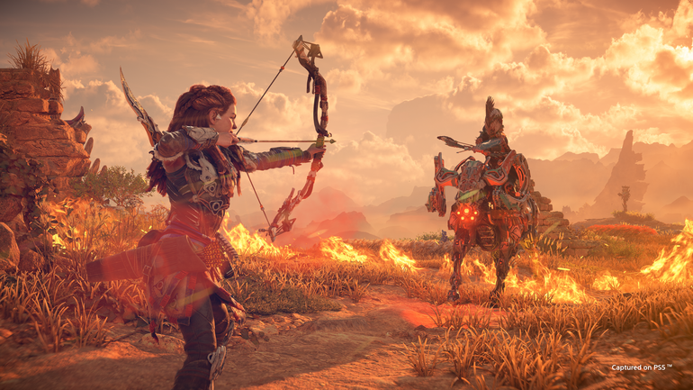Antes de mais nada, vale notar: Horizon Forbidden West é, acima de tudo, mais Horizon. E, diria, mais refinado em vários aspectos, mas ainda com os elementos fundamentais de seu predecessor.
(Com uma exceção que apareceu em um dos últimos trailers do jogo, mas vou tentar não estragar o resto da experiência)
Na maior parte do tempo o que você faz não foge muito do que se viu em 2017 no PS4 ou em 2020 no PC: você é a Aloy, você mata máquinas e humanos hostis e você explora ruínas para descobrir mais sobre o passado da Terra e da humanidade.
Mas como você faz isso e de que formas essas novas descobertas influenciam na história ou mesmo em trechos de gameplay são o diferencial.
Jornada para o Oeste
Horizon Forbidden West se passa meses após os eventos de Zero Dawn, quando Aloy e seus aliados impediram a inteligência artificial Hades e as máquinas de guerra do passado de destruírem o planeta. Tudo ótimo, certo?
Não.
De lá para cá as coisas pioraram significativamente em tempo recorde, com tempestades e eventos climáticos devastadores, junto de uma misteriosa praga de plantas vermelhas que ameaça acabar com todo o terreno fértil da Terra.
Não só isso, os animais-máquinas estão sendo "atualizados" para versões mais agressivas e letais como mecanismo de defesa contra os humanos, cortesia de Hefesto, inteligência artificial que serviu de antagonista para a expansão Frozen Wilds.
Com o destino da Terra em jogo, Aloy busca por pistas de um backup de Gaia, a super-IA que ajudou a recriar a vida no planeta no passado. Para isso, ela deve seguir para o chamado Oeste Proibido, uma região inóspita e pouco explorada pelas tribos que conhecemos no jogo anterior, como os Carja e os Nora.
E esse é justamente o palco que a Guerrilla Games usa para criar um game com uma escala de tamanho e diversidade maiores do que o seu predecessor. Zero Dawn tinha alguns biomas diferentes, mas ele perde muito (muito!) em comparação a sua sequência.
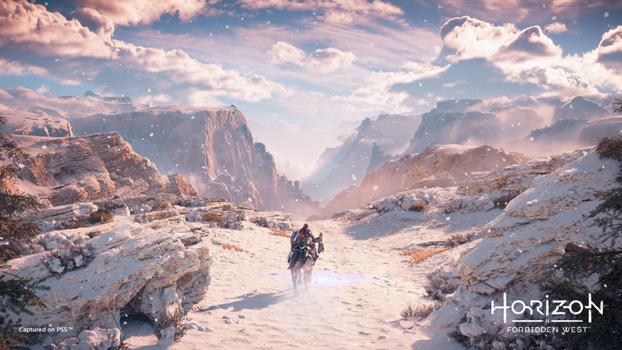Durante sua jornada, Aloy atravessa florestas, montanhas nevadas, desertos, pântanos e as praias da Costa Oeste dos Estados Unidos — todas com uma identidade visual clara e diferenciada uma da outra, cada uma com seus próprios efeitos e elementos climáticos.
A direção de arte do game é espetacular, sendo possível quase sentir a umidade na cidade de Farpântano ou o frio das tempestades de neve nas montanhas nas regiões mais ao norte do mapa.
E não posso garantir, mas suspeito que o pessoal da Guerrilla tenha visto muito Blade Runner 2049 para recriar o território do deserto do Mojave, já que as tempestades de areia nas ruínas de Las Vegas lembram muito o filme de Denis Villeneuve.
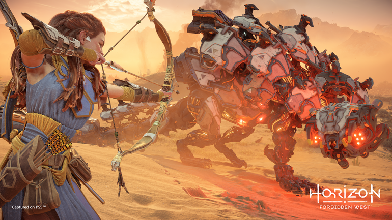Dito isso, o tamanho do mapa em si me incomodou um pouco, por achar que ele acaba espaçando demais as atividades e conteúdo que ficam dentro dele. Suas dimensões são consideráveis, mas não parecem contar com uma vivência significativa.
Durante minha campanha, encontrei alguns eventos especiais emergentes, como rebeldes caçando máquinas ou até uma breve quest envolvendo uma pessoa que caiu de um penhasco, mas em geral o mundo é dividido principalmente entre alguns povoados de humanos e habitats de animais-robôs, com grandes espaços entre tudo.
É claro que minha situação é um tanto diferente da que você, caro leitor, deve encontrar em sua campanha, já que tive que correr para jogar o máximo possível do jogo para o review. Ainda assim, ao completar a narrativa principal, uma parte considerável do mapa continuava ou com uma névoa ou no mínimo esfumaçada, o que indicava que eu não tinha explorado muito dele.
Isso sem falar de vários momentos em que eu só pensava "Meu Deus, só me deixa chegar no objetivo" enquanto atravessava um canto ao outro das regiões.
E para ser justo, isso também me rendeu um dos meus momentos favoritos do meu tempo com o jogo, quando uma montaria morreu entre o deserto e o pântano e decidi seguir em frente até chegar a um lugar mais habitável, enfrentando máquinas e emboscadas humanas pelo caminho.
Infelizmente, isso em geral era mais uma exceção do que a norma. Pelo menos o sistema de fast travel é significativamente melhor do que seu predecessor, já que é possível ir de fogueira em fogueira sem gastar os famigerados kits de viagem (que também não requerem mais a maldita carne gordurosa)
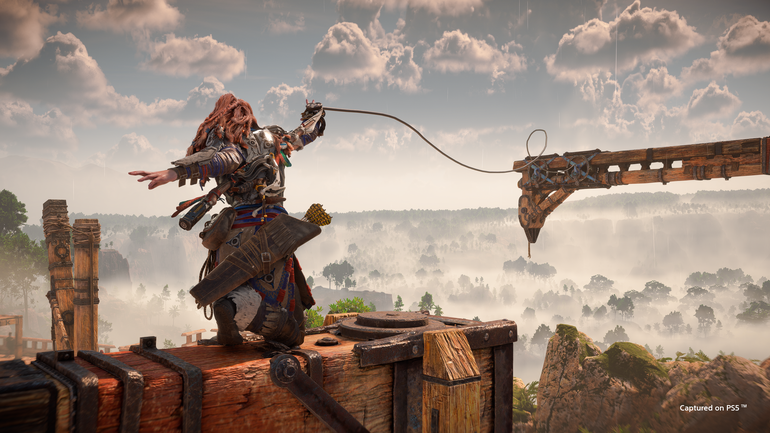Aloy também conta com alguns novos apetrechos para ajudar nas travessias, incluindo um gancho especial capaz de abrir buracos e mover vigas em certos pontos no mapa, além de ganhar um planador nas primeiras horas de jogo, ajudando com o acesso a diferentes pontos no mapa.
Não só isso, a Guerrilla parece ter se esforçado para fazer o processo de escalada de montanhas mais intuitivo e "natural", criando vários pontos de acesso para subir as paredes que não são necessariamente visíveis ao olho nu, mas que podem ser identificados por meio do foco de Aloy.
Para mim, o mundo de Forbidden West poderia ser um pouquinho mais enxuto e denso. Ele não chega a sofrer do tipo de "gordura" que vejo de um game da Ubisoft, por exemplo, mas há uma qualidade própria em não se estender mais do que o necessário.
Pelo menos, ele nunca é feio, e cada local tem uma personalidade que se reflete no visual e estilo das tribos que habitam o Oeste.
Povos ocidentais
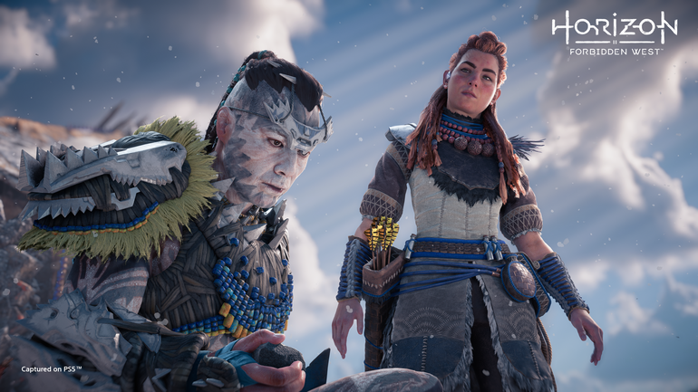Nas primeiras horas do jogo você ainda encontra predominantemente membros dos Carja ou dos Oseram, que foram apresentados em Zero Dawn, mas depois de um certo momento eles passam a ser mais raros, e suas interações acabam acontecendo principalmente com os Utaru e os Tenakth, os dois principais grupos que habitam o Oeste.
Os Utaru acabam perdendo o foco depois de algumas horas de jogo, mas são a cultura que mais curti na história, sendo uma tribo de plantadores que conseguiu encontrar um equilíbrio com a terra e um grupo especial de máquinas — pelo menos até a biosfera entrar em desequilíbrio, e as coisas começarem a piorar horrivelmente.
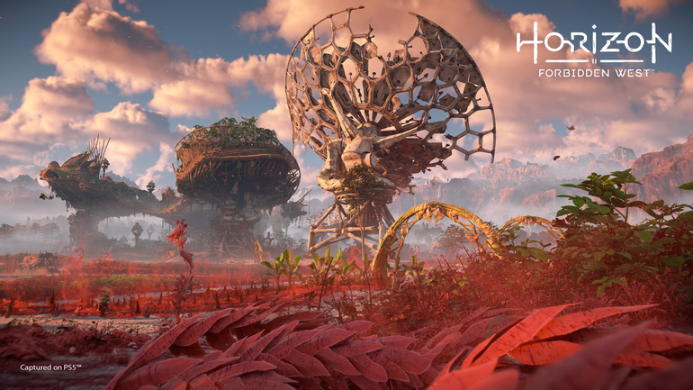Já os Tenakth são o povo que você mais vai ver em sua jornada para o oeste, por ser formado por três clãs que habitam diferentes áreas do mapa, além da facção rebelde de Regalla, uma das principais vilãs do jogo.
A Guerrilla fez um bom trabalho ao equilibrar a seriedade e humor envolvendo os Tenakth, que são um povo extremamente sério e com uma cultura marcial forte, com o fato de que suas origens vem de uma má interpretação de hologramas de museu.
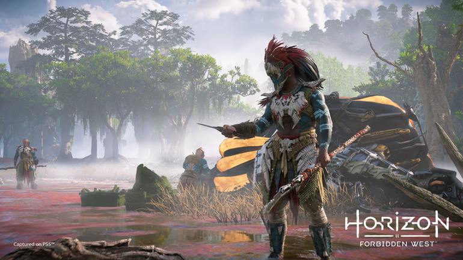Há alguns outros povos e facções que são apresentados no decorrer da trama, mas prefiro manter um pouco de segredo quanto a elas por trazerem novas complicações à história como um todo.
Isso, aliás, me leva a falar da narrativa, porque eu gostei muito da história desse jogo... mas eu não posso discutir muito sobre ela por aqui. Tal qual em Zero Dawn, Forbidden West começa um tanto lento, queimando um pavio longo para chegar até o conflito central.
E tal qual em Zero Dawn, a partir do momento em que esse conflito é apresentado, a bola de neve começa a rolar, e novas missões apresentam algo de novo que pode ajudar ou complicar ainda mais os objetivos de Aloy e seus companheiros — que, aliás, ganham bem mais destaque no novo jogo.
Alguns deles são figuras conhecidas do primeiro jogo, como Erend e Varl, enquanto outros nos mostram mais da perspectiva das novas tribos, como a Zo, dos Utaru, e Kotallo dos Tenakth.
Inclusive você também conta com seu próprio espaço para interagir com eles... embora, novamente, é melhor não falar muito mais do que isso.
As missões secundárias tendem a não ser inspiradas em termos de mecânica, muitas vezes se limitando a ou ir a algum lugar e bater em robôs e humanos, ou subir em algum lugar bem alto e de difícil acesso. Ou, frequentemente, as duas coisas.
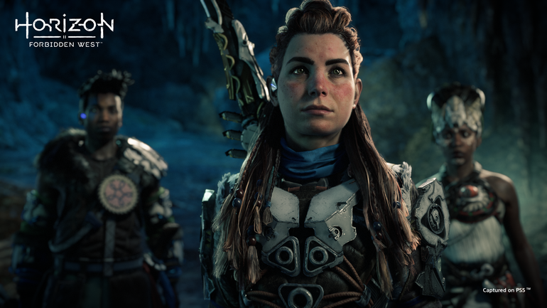Mas em muitos casos elas servem para contar histórias interessantes, como o jovem Tenakth isolado que quer se provar um guerreiro ao escalar o alto de uma montanha, ou Aloy indo procurar a armadura de uma mulher que decidiu montar em uma Ave-Tempestade e nunca mais foi vista.
O jogo também adora pontuar e expandir coisas que foram apresentadas de forma grande ou pequena em Zero Dawn, especialmente as relacionadas ao Velho Mundo e a humanidade que se foi.
Há algumas coisas que acho que poderiam ser melhor construídas ou detalhadas em termos de narrativa, em especial falando dos vilões, mas em geral é uma história bem acertada e engajante.
Tentando resumir da forma mais livre de spoilers possível, minha visão é que Horizon Forbidden West é sobre Aloy descobrindo que é possível depender e formar laços mais fortes com outras pessoas, e que seu conhecimento sobre o mundo e os erros que o levaram a esse estado.
Em um nível maior, é também sobre como os extremamente poderosos são incapazes de pensar além de si próprios e seus interesses mesquinhos, agindo como se todos fossem recursos a serem usados ou eliminados.
E, por isso mesmo, eles devem ser enfrentados diretamente.
Mulher versus máquina (versus homem)
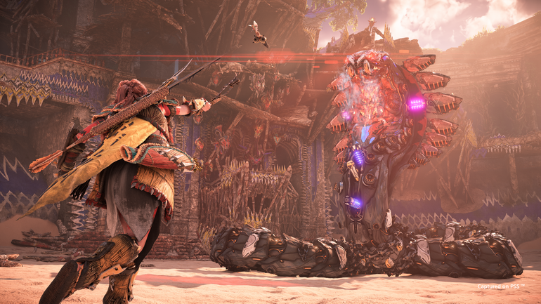O combate de Horizon Forbidden West não foge muito do que foi apresentado em Zero Dawn, o que pra mim é bom quando estamos falando de lutas contra as máquinas, e nem tão bom quando o assunto é batalhas contra humanos.
As batalhas contra os animais-robôs me agradam por serem grandes quebra-cabeças, com soluções diferentes dependendo do seu estilo de jogo e que tipo de armas você prefere usar.
Enquanto isso talvez não fosse tão óbvio no primeiro jogo, aqui você é logo apresentado à ideia de fraquezas contra determinados tipos de elementos, e pontos fracos que podem ser explorados durante o combate.
Não só isso, é possível até usar as próprias vantagens e habilidades especiais das máquinas contra elas. Isso é apresentado durante o início do jogo, e ainda a mantive como estratégia essencial dezenas de horas mais tarde.
Poucas coisas me traziam mais satisfação do que atirar uma flecha de fogo em um tanque de combustível ou um dardo elétrico em uma bobina e ver tudo ir pelos ares, deixando o inimigo ainda mais vulnerável.
Ainda assim, as batalhas mais legais e que requerem mais estratégia demoram algum tempo para acontecer, já que é preciso ter mais acesso e mais armas e tipos de munição para ganhar o luxo de ter um estilo mais versátil.
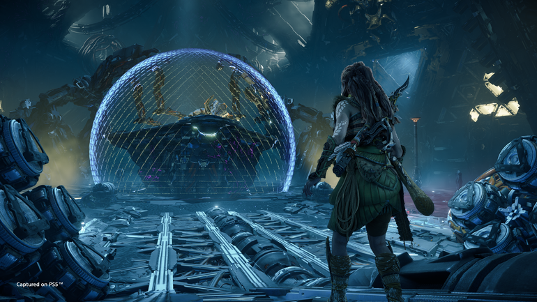E caso esteja procurando mais variedade além de arcos e estilingues, o jogo conta novos tipos de armas, incluindo um lançador de aljavas explosivas e minha adição favorita (que não consegui dominar) na forma dos chamados trituradores, capazes de lançar discos em inimigos que, caso acertados, voltam para a munição de Aloy.
Além disso, o MVP do último jogo, o lança-cordas, parece não ter a mesma efetividade desta vez, mas agora também conta com uma variedade em que cilindros especiais podem ser presos nos corpos de alvos e explodidos com diferentes munições elementais.
O combate contra humanos, por outro lado, não dá tantas chances à versatilidade. No geral, a melhor estratégia é ou derrubá-los furtivamente, ou mirar na cabeça para uma eliminação rápida (quando eles não tem alguma proteção na cara, claro).
O combate corpo a corpo não é nada de especial ou requer muito pensamento, embora a sensação de dar uma porrada forte ao segurar R2 seja extremamente satisfatória no DualSense.
A grande diferença é que agora Aloy conta com um dispositivo chamado Ressoador, que vai carregando conforme ela ataca os inimigos. Ao deixá-lo em 100% e dar um golpe forte, você marca um inimigo com um ponto fraco, que pode causar grandes danos ao ser atingido por uma flecha.
Mas vou ser bem honesto e dizer que achei a mecânica mais um apêndice do que qualquer coisa, e não devo ter usado ela tanto quanto os desenvolvedores planejavam. Pelo menos encontrei mais utilidade os chamados Impulsos de Bravura, habilidades especiais desbloqueadas via a árvore de evolução, que contam com algumas vantagens bem significativas ao tornar poções mais eficazes ou facilitar a remoção de peças de armadura.
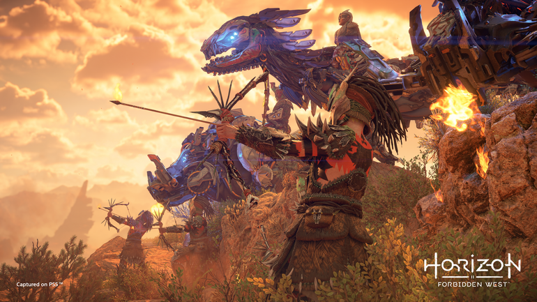A árvore de habilidades em si também foi repaginada para ter seis categorias diferentes, e conta com uma mistura de elementos passivos, ativos, e técnicas especiais para as diferentes armas.
Achei a estrutura de cada uma bem pensada, já que há várias rotas, por assim dizer, para desbloquear certas habilidades. Por isso, se você não estiver interessado em liberar uma técnica para o arco de caça, mas quer uma habilidade passiva logo ao lado, é só seguir por um outro caminho.
Infelizmente, o inventário não me agradou muito. Ele não mudou significativamente em relação a Zero Dawn, e o jogo sofre com o mesmo problema de seu predecessor em que você acaba ficando entulhado de bobinas diferentes.
Também não ajuda que agora mais espaços para bobinas só podem ser desbloqueados por um sistema de upgrades para suas armas e trajes, em que você pode melhorá-las por conta própria ao usar determinados itens e recursos tirados dos inimigos.
Para mim acabou sendo uma complicação a mais, especialmente porque, como no jogo anterior, você continua refém do gerador randômico de itens ao vasculhar os corpos dos robôs ou dos humanos caídos.
E já que estamos na parte de reclamações, a performance do jogo no PlayStation 5 é boa, em geral, mas há um problema recorrente quanto ao loading de texturas, com objetos surgindo do nada na minha frente enquanto explorava, ou demorando um tempo considerável para carregar certos objetos, seja na distância ou próximo a Aloy.
Isso sem falar nos crashes: embora não vou dizer que foram recorrentes, acho que foi o jogo que parou de funcionar mais vezes comigo em um console PlayStation nos últimos anos.
É bem possível que isso seja corrigido no patch de lançamento, é claro, que obviamente visa acertar essas questões para um público maior, mas foi um problema recorrente durante minha experiência — que, como eu acabei de falar, rolou em um PlayStation 5.
E, mesmo testando a versão pós-patch, ainda deu para sentir alguns glitches e questões de performance - mas nada tão inesperado de um jogo em mundo aberto com um tamanho desses.
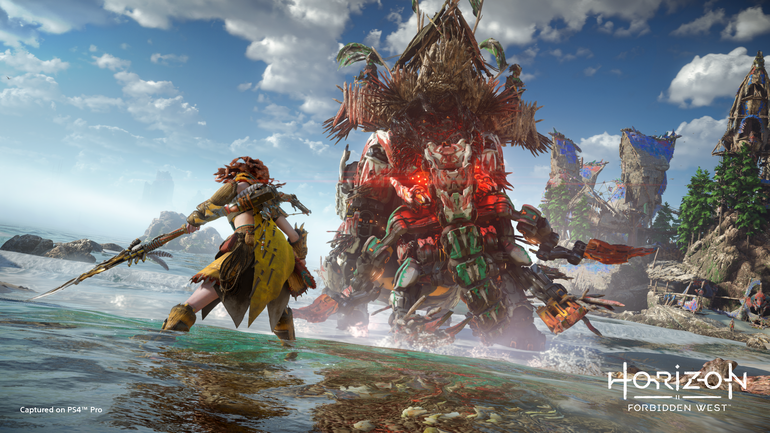Infelizmente não tive tempo de testar a versão de PS4 até a publicação desta análise, mas considerando que esses problemas rolaram no console de nova geração, não me passa muita confiança no videogame anterior.
Por isso sim, o jogo está longe de ser uma experiência perfeita, e tive muitas ressalvas durante meu tempo para esse review. Mas, a meu ver, esse jogo é mais do que a soma de suas partes, e consigo perdoar ao menos parte de seus problemas por trazer uma experiência tão envolvente e marcante para mim.
Sério, o final da campanha principal conta com várias missões e momentos sensacionais, que acho que merecem uma discussão mais para frente.
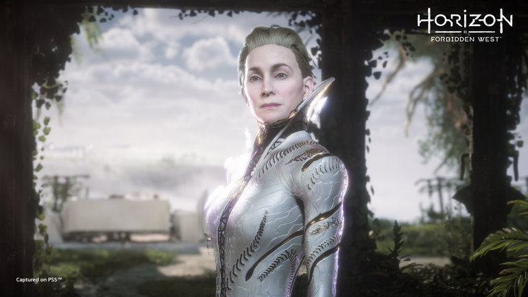A conquista do Oeste
Horizon Forbidden West é uma sequência extremamente digna de seu predecessor, e quem curtiu a primeira aventura de Aloy muito provavelmente vai adorar essa nova jornada da personagem.
Sem spoilers, mas há um gancho bem claro para o que vem por aí no próximo jogo, e fico curioso para saber como a Guerrilla vai seguir daqui para frente, especialmente depois da saída do John Gonzalez, o líder narrativo dos dois Horizon — e também de Fallout: New Vegas, que curiosamente também tem um deserto do Mojave pós-apocalíptico com várias tribos diferentes, e com uma mensagem mais abertamente política.
Minha última observação para quem for jogar é simplesmente não jogar do jeito que eu joguei, correndo e me apressando o máximo possível para terminar esse review a tempo. Pessoalmente eu sugiro não ficar muito preso à área inicial do jogo, antes de Ocásia.
Mas depois disso, vale aproveitar e tomar o jogo no seu tempo, e conhecer essa nova parte do mundo com paciência e cuidado. O Oeste Proibido é grande e selvagem, mas descobrir mais sobre ele, seus povos e seu passado é bem recompensador.